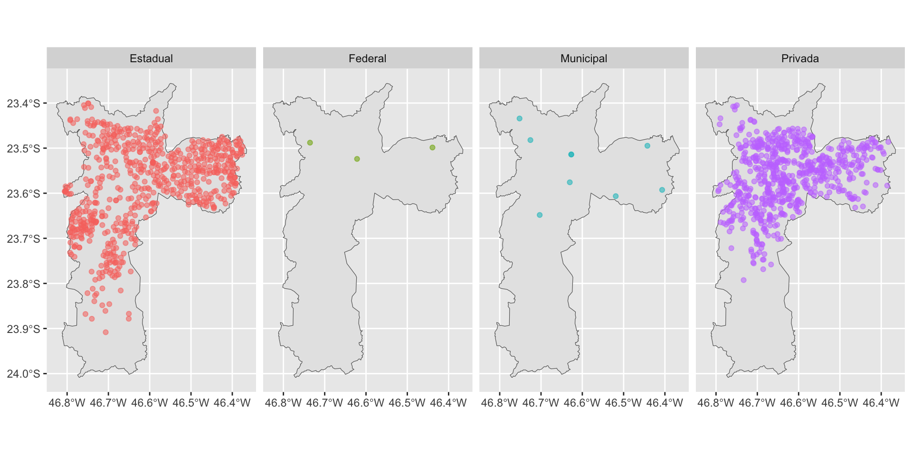

Conhecendo o pacote geobr
Beatriz Milz
2023-11-22
Pacote geobr
O pacote geobr disponibiliza funções para obter diversas bases de dados espaciais oficiais do Brasil.
O pacote foi desenvolvido e é mantido pela equipe do IPEA - Instituto de Pesquisa Econômica Aplicada.
Você pode saber mais no repositório do pacote no GitHub: https://ipeagit.github.io/geobr/
Funções importantes
read_country(): Delimitação do Brasilread_state(): Delimitação dos estados do Brasilread_state("SP"): Delimitação de um estado específico, usando a sigla como argumentoread_municipality(): Delimitação de todos os municípios do Brasil. É uma base pesada!read_municipality(code_muni = 3550308): Delimitação de um município específico, usando o código do IBGE do município.
Consultando todas as funções disponíveis
- Função
list_geobr()
Conceitos importantes: Vetor x Raster

Fonte da imagem: https://guides.lib.uw.edu/
Com o geobr, trabalhamos com dados vetoriais!
Pontos: localização de uma escola, ponto de coleta, etc.
Linhas: ruas/estradas/rodovias, rios, etc.
Polígonos: delimitação de cidades, estados, países, etc.
Usamos uma nova classe de dados: sf!

Fonte da imagem: https://github.com/allisonhorst/stats-illustrations
Vamos para alguns exemplos!!
Ler a delimitação dos estados brasileiros
Explorando o objeto
Rows: 27
Columns: 6
$ code_state <dbl> 11, 12, 13, 14, 15, 16, 17, 21, 22, 23, 24, 25, 26, 27, 2…
$ abbrev_state <chr> "RO", "AC", "AM", "RR", "PA", "AP", "TO", "MA", "PI", "CE…
$ name_state <chr> "Rondônia", "Acre", "Amazonas", "Roraima", "Pará", "Amapá…
$ code_region <dbl> 1, 1, 1, 1, 1, 1, 1, 2, 2, 2, 2, 2, 2, 2, 2, 2, 3, 3, 3, …
$ name_region <chr> "Norte", "Norte", "Norte", "Norte", "Norte", "Norte", "No…
$ geom <MULTIPOLYGON [°]> MULTIPOLYGON (((-63.32721 -..., MULTIPOLYGON…Visualizando os estados brasileiros
Filtrando o estado de São Paulo

E os municípios?
Explorando o objeto
Rows: 5,567
Columns: 5
$ code_muni <dbl> 1100015, 1100023, 1100031, 1100049, 1100056, 1100064, 110…
$ name_muni <chr> "Alta Floresta D'oeste", "Ariquemes", "Cabixi", "Cacoal",…
$ code_state <chr> "11", "11", "11", "11", "11", "11", "11", "11", "11", "11…
$ abbrev_state <chr> "RO", "RO", "RO", "RO", "RO", "RO", "RO", "RO", "RO", "RO…
$ geom <MULTIPOLYGON [°]> MULTIPOLYGON (((-62.2462 -1..., MULTIPOLYGON…Como saber o código IBGE de um município?
- Você pode consultar o código IBGE de um município no site do IBGE.

Filtrando o município de São Paulo
Visualizando o município de São Paulo
E escolas?
Explorando o objeto
Rows: 222,936
Columns: 19
$ abbrev_state <chr> "RO", "RO", "RO", "RO", "RO", "RO", "RO…
$ name_muni <chr> "Porto Velho", "Porto Velho", "Porto Ve…
$ code_school <int> 11000023, 11000040, 11000058, 11000082,…
$ name_school <chr> "EEEE ABNAEL MACHADO DE LIMA - CENE", "…
$ education_level <chr> "Ensino Fundamental", "Educação Infanti…
$ education_level_others <chr> "Atendimento Educacional Especializado"…
$ admin_category <chr> "Pública", "Pública", "Privada", "Priva…
$ address <chr> "AVENIDA AMAZONAS, 6492 ZONA LESTE. TIR…
$ phone_number <chr> "(69) 992083054", "(69) 32135237", "(69…
$ government_level <chr> "Estadual", "Municipal", "Privada", "Pr…
$ private_school_type <chr> "Não Informado", "Não Informado", "Part…
$ private_government_partnership <chr> "Não", "Não", "Não", "Não", "Não", "Não…
$ regulated_education_council <chr> "Não", "Sim", "Sim", "Sim", "Sim", "Sim…
$ service_restriction <chr> "ESCOLA ATENDE EXCLUSIVAMENTE ALUNOS CO…
$ size <chr> "Entre 51 e 200 matrículas de escolariz…
$ urban <chr> "Urbana", "Urbana", "Urbana", "Urbana",…
$ location_type <chr> "A escola não está em área de localizaç…
$ date_update <chr> "2020-10-18", "2020-10-18", "2020-10-18…
$ geom <POINT [°]> POINT (-63.85401 -8.758459), POIN…Escolas no município de São Paulo
Escolas por government_level
Simple feature collection with 4 features and 2 fields
Geometry type: MULTIPOINT
Dimension: XY
Bounding box: xmin: -46.8074 ymin: -23.90918 xmax: -46.36614 ymax: -23.3996
Geodetic CRS: SIRGAS 2000
government_level n geom
1 Estadual 1275 MULTIPOINT ((-46.75558 -23....
2 Federal 4 MULTIPOINT ((-46.62169 -23....
3 Municipal 1563 MULTIPOINT ((-46.7141 -23.8...
4 Privada 5272 MULTIPOINT ((-46.7133 -23.8...Escolas que oferecem Ensino Médio
Vamos visualizar?
Visualizando as escolas

Visualizando as escolas e o município
Visualizando as escolas por government_level
Visualizando as escolas por government_level
Visualizando as escolas que oferecem Ensino Médio
Deixando mais bonito
Materiais
Slides feitos com Quarto e Quarto R-Ladies Theme.